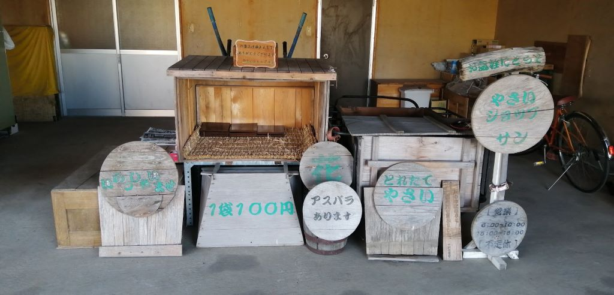

自己紹介
こんにちは、私は青森県平川市蒲田にある「やさいショップ・サン」です！ 私の畑では、安くて新鮮で安心・安全な無農薬野菜を栽培しています！
無農薬野菜は、化学合成農薬や化学肥料を使わずに育てた野菜です。そのため、人や環境に害を与える心配が少なく、健康にも良いと言われています。
私の畑では、朝早くに収穫し、対面販売しています。そのため、新鮮さが格段に違います。また、野菜が旬の時期に収穫できるので、味や栄養価も高く、とても美味しいです。
夏の野菜
夏に収穫できる野菜を紹介します。各野菜をクリックすると次のサイトに飛ぶことができます。


お問い合わせ
ご質問・ご相談がありましたら、お気軽にお問い合わせください。
携帯電話：080-3143-3741
営業時間：【午前】6:00～10:00 【午後】15:00～18:00
定休日：不定休